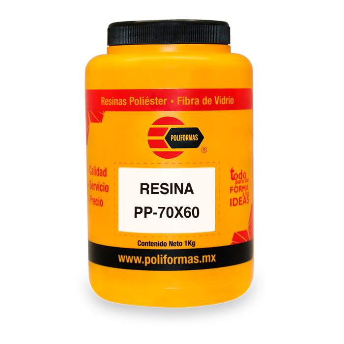
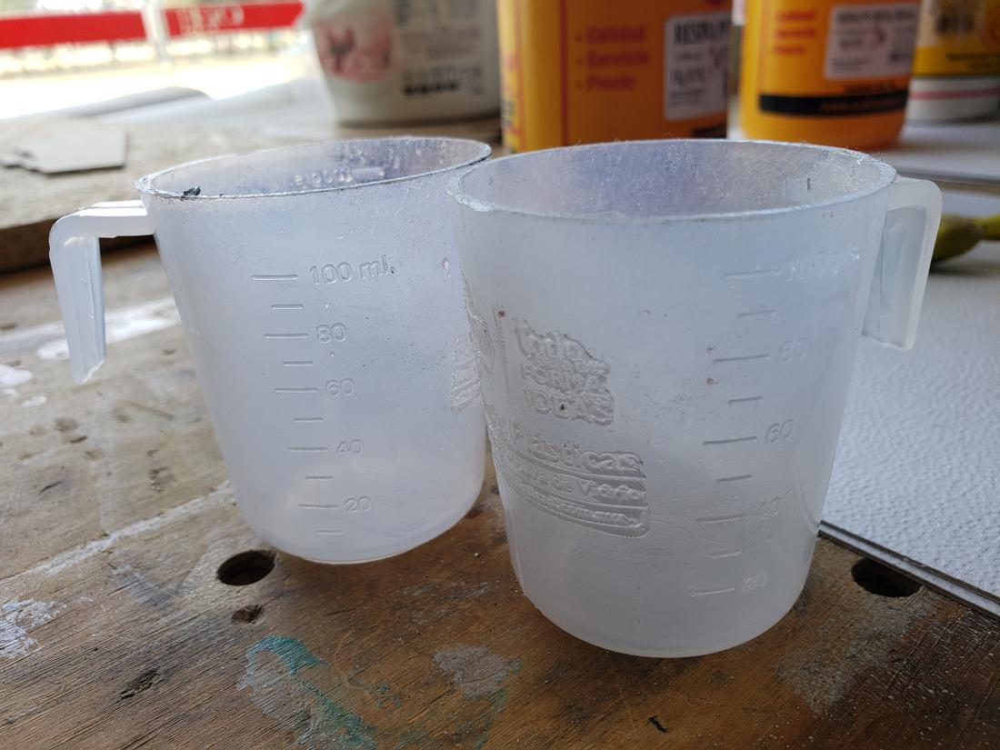
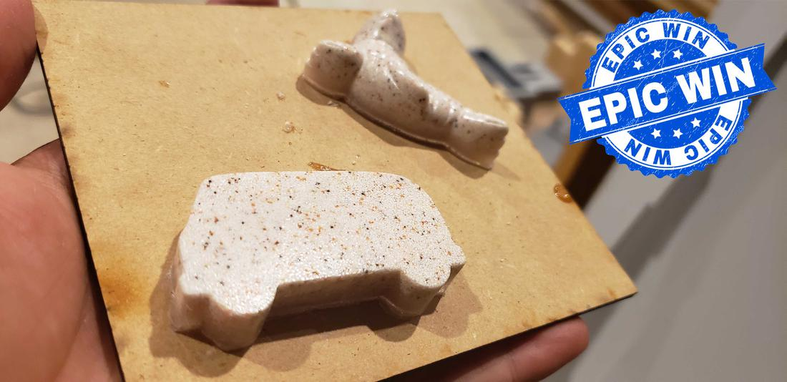

The safety //
In this assignment dangerous materials were used, so it is very important to read the safety data sheets of each material that we use, in this way we will be able to know how dangerous they are, what safety equipment to use, what to do in case of an emergency, in addition to know the properties of the product.
The products used were acquired in Poliformas Plásticas, which are shown below, in addition to including a link to the data sheet.
RESIN PP-70x60

Unsaturated polyester resin, orthophtalic of pre-accelerated average reactivity.
- Fast curing even in thin sections
- Percentage of solids suitable for your application
- Easy to fiberglass moisturizer
- Consistent curing at various levels of catalysis
- Good acceptance of mineral charges
- Good barcol hardness development
RESIN PP-CRISTAL READY

Polyester resin with great transparency. Designed for the manufacture of encapsulated.
- Its medium reactivity gives us more control over curing
- Low percentage of shrinkage, which allows us to avoid high thickness strikes
- Great transparency and shine in finished product
SILICON P-48
Vulcanizable silicone liquid rubber at room temperature. APPLICATIONS: castings of polyester resins, waxes, plasters, etc.
- High Viscosity
- Vulcanization at room temperature
- Excellent resistance to high temperatures, in the order of up to 250 ° C
SILICON DILUENT
Liquid to dilute the silicone rubber to the desired consistency, exhibiting excellent lubricating properties.
- Little variation of viscosity with temperature
- Non-toxic and inert
- Excellent electrical insulators
- Resistant to high and low temperature, UV radiation, chemicals, compression and cutting efforts
CATALYST K-2000
Used for the curing at room temperature of unsaturated polyester resins and gel coat`s
- High content of active oxygen (8.9 ± 0.1)
- Easy integration to the resins and gel coat`s
- Low water content
- Clear colorless liquid
Most of these products consist of 2 parts, the active substance (A) and a catalyst (B), both parts must be mixed vigorously to generate a uniform product. The catalyst is responsible for activating the exothermic chemical reaction that allows the resin or rubber to solidify.
It is worth mentioning that it is necessary to read the data sheets or go with the supplier to know the quantities or percentages of A and B needed by the product to be used.
For the tests we use 2 different types of resin and 1 type of rubber. For these products we spoke with the supplier and indicated that the percentage was 70% of A and 30% of B, this is the standard, since we play with the quantities slightly to accelerate or decrease the drying time.
For these tests we use small plastic molds, in order to experiment with these products.
In the rubber test, we used plasticine to create a box, where I put a keychain.

After several tests, we obtained that 80% of A and 20% of B was ideal for this type of projects. Although everything depends on the fact that, the faster the reaction, the faster it dries and this leads to a more aggressive exothermic reaction, which generates more heat and this can cause the piece to thunder. A slow speed will take too long to solidify or even never finish solidifying.
In a rubber test the catalyst we used had already expired so it never dried, leave the piece in the sun, in a ventilated area and not, I spend a whole week and never dry, it is more, until I dropped a fly, LOL .
In some pieces we include load of stone and white of Spain, the load of stone is heavier so it went to the bottom, achieving a very beautiful finish.


The sword //
For the individual subject I decided to make a sword, this sword is the Elucidator, which belongs to the anime of Sword Art Online, look for reference images, real measurements and videos. Initially I wanted to do it on a real scale, but it would be a somewhat expensive project, since the sword measures more than 1 meter, so I chose to make a scale model.
The model of the sword was designed in the Rhinoceros software and then exported to Fusion 360 to complete the mold box, this in order to continue learning several CADS.
With the 3D model of the sword and the cageado, use the Aspire software to generate the necessary .nc files to use the cnc router.
Here there was something new, to program the cut of the sword in 3D, first the profiling file is generated, which will cut the wood in a rough way, that is, it will only make the silhouette, to later give it the finish with another cutting tool, the ball point.
The result of applying this cutter generates a smooth and detailed finish. Finally, return to the straight cutting tool to cut the frame of my mold.
In the cut I created an extra frame so that my mold had higher walls and in this way there would not be a thin layer at the highest point of the sword. This frame then stick with resistol and press.
Prepare the mixture to apply the rubber stirring both parts and after stirring vigorously, put the mixture in the vacuum machine to be able to extract the bubbles that were generated, then slowly empty the mixture on mold and let it dry.
I made 2 molds at a time so I could use them later and empty the resin, so when I finished drying the rubber I had to cut it in half.
To calculate how much resin I would need, fill my molds with water and then pour it into a container to calculate the volume. Also, this allowed me to see how the liquid flowed through the mold and thus see where the casting of the resin might have difficulties.
Finally I made the mixture of my resin glass with a little load of white from Spain to give firmness to the resin, since by itself it lacks structure and could break very easily.
Join the 2 parts of the mold inside some boards to give firmness and press the boards. Pour the resin and soon, oh fatal surprise!, there was a leak so the resin began to leak.
So immediately release the presses and separate the molds to place them on the table, finish filling the molds separately one by one and let dry.
Before it solidified completely, I reattached the two parts of the mold to empty a little more resin and in this way join the 2 halves as if it were glue. I returned to press and let dry, the result was the following.